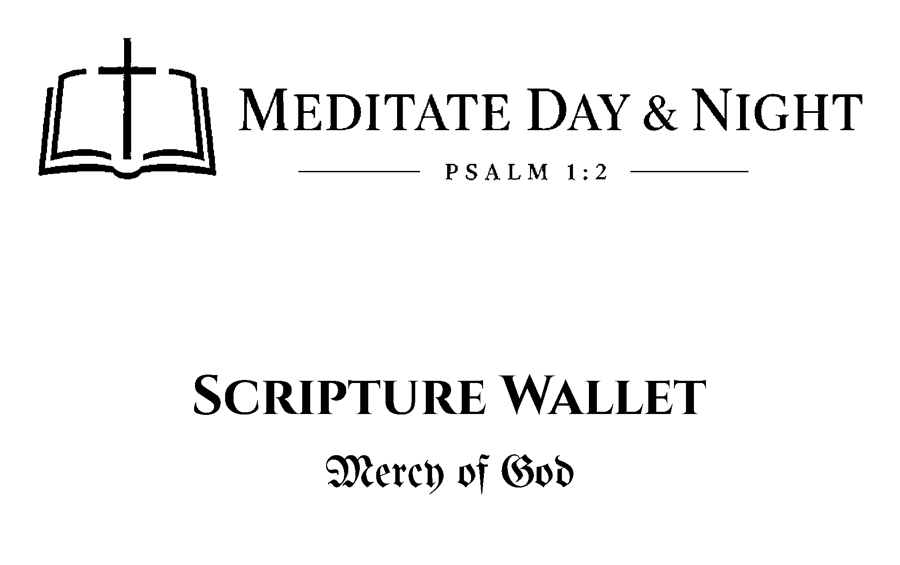
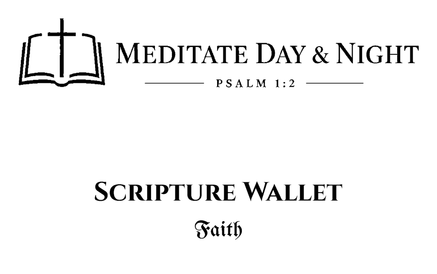

Scripture Wallet Sets
Five pocket sets of King James Bible verses, engraved on metal cards. Open any set to read every verse, see each card, and download the printable PDF.

Foundations
The starting set: delighting in the Word, trusting the LORD, and standing on His promises.
40 cards · View verses & PDF →
Daily Bread
Scripture for every day: provision, strength, and walking with God morning and evening.
40 cards · View verses & PDF →
Mercy of God
The mercy, forgiveness, and lovingkindness of God.
20 cards · View verses & PDF →
Faith
Faith that pleases God, comes by hearing, and overcomes.
20 cards · View verses & PDF →
Walking in Love
Loving God with all the heart, and loving one another.
20 cards · View verses & PDF →